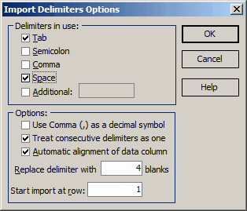

Data Import Options
Data Import Options
Navigation: OptiLayer Menu Commands > Edit Menu > Text Data Import >
Data Import Options
` <idh_import.html>`__ ` <idh_import.html>`__ ` <idh_paste_buffer.html>`__

To select delimiters, check the appropriate boxes in the “Delimiters in use” section. If you need to specify an additional delimiter that is not already listed, check the Additional box and type the delimiter in the edit window. For example, you can add a colon to the list of delimiters by typing it in the edit window. In some European countries, a comma (,) is used as a decimal symbol in the default Windows settings. However, OptiLayer always uses a period (.) as the decimal symbol, ignoring Windows settings, as the period is more suitable for scientific applications. During the Import procedure, you may need to change this mode and use a comma (,) as the decimal symbol when extracting numerical data from the text file. Depending on the type of input ASCII file, you may want to skip or import empty data fields between the delimiters. You can set the necessary mode using the “Treat consecutive delimiters as one” checkbox. The “Automatic alignment of data columns” option allows the user to align text properly in the input window for easy selection and import. You can also manually align columns by expanding delimiters into sequences of blanks, similar to how it is done in text editors to expand Tab symbols. Set the desired width of the delimiter expansion in the “Replace delimiter with … blanks” field. As ASCII files may contain headers before the actual data, it is often convenient to skip several text lines. Set the number of the first row containing imported data in the “Start import at row” edit box.